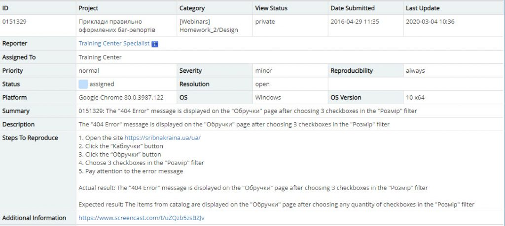
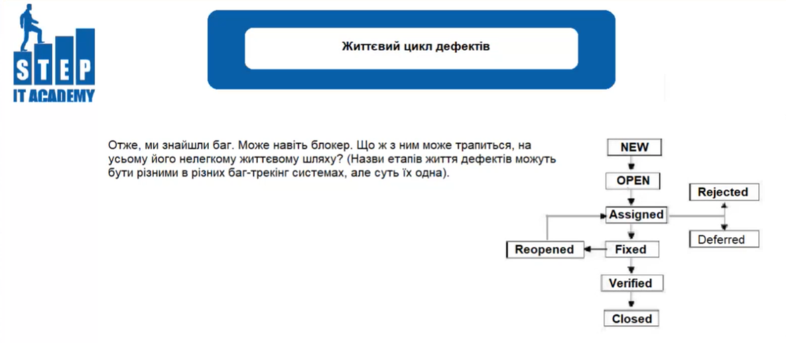

Bug Report
Баг репорт (bug report)
Баг репорт - це документ, що описує ситуацію чи послідовність дій, що призвела до некоректної роботи об'єкта тестування, із зазначенням причин та очікуваного результату.
Структура баг репорту
Перерахуємо і детальніше розглянемо основні атрибути баг-репорта:
- Summary (Опис) - це короткий опис бага, що явно вказує на причину і тип хибної ситуації. У цьому полі необхідно коротко викласти суть бага. Для того, щоб в повній мірі описати баг, необхідно послідовно відповісти на три питання: “Що? Де? Коли?”;
- Environment (Середовище) - це атрибут дефекту, який вказує на якій платформі цей дефект відтворюється (iOS, Android, Windows, Mac і їх версії, назви і версії браузерів, в яких відтворюється дефект);
- Preconditions (Передумова) - що ми зробили;
- Steps to reproduce (Кроки для відтворення) - точний та зрозумілий опис усіх кроків, що призводять до появи дефекту, з урахуванням усіх необхідних вхідних даних, тощо;
- Expected Result (Очікуваний результат) - результат, який мав бути відповідно до вимог;
- Actual Result (Фактичний результат) - опис того, що трапилося фактично. Вказується що працює не так, в якому місці продукту і за яких умов;
- Attachments (Візуальний доказ) - скріншот, відео або лог-файл. Це робиться тому, що інформація краще засвоюється візуально, ніж текстово;
- Priority (Пріоритет дефекта) - це атрибут, що вказує на чергу виконання задачі або усунення дефекту;
- Severity (Серйозність дефекта) - це атрибут, що охарактеризовує вплив дефекту на працездатність додатку;
- Status (Статус) - основний атрибут, що визначає поточний стан бага. Відображає життєвий цикл бага від початкового стану до завершення.
Приклад правильного оформлення баг репорту:
Класифікація дефектів
Серйозність (Severity) - це класифікація дефектів, з точки зору ступеня впливу на працездатність ПЗ.
- Блокуюча (Blocker)
Блокуюча помилка, що призводить додаток в неробочий стан, в результаті якого подальша робота з тестованою системою або її ключовими функціями стає неможливою. Рішення проблеми необхідне для подальшого функціонування системи.
- Критична (Critical)
Критична помилка, неправильно працює ключова бізнес-логіка, діра в системі безпеки, проблема, яка призвела до тимчасового падіння сервера або приводить в неробочий стан деяку частину системи, без можливості вирішення проблеми, використовуючи інші вхідні точки. Рішення проблеми необхідно для подальшої роботи з ключовими функціями тестовою системою.
- Значна (Major)
Значна помилка, яка означає, що частина основної бізнес-логіки не працює правильно. Помилка не є критичною, або є можливість роботи з функцією що тестується, використовуючи інші вхідні точки.
- Незначна (Minor)
Незначна помилка, що не порушує бізнес логіку частини додатку, що тестується, очевидна помилка користувацького інтерфейсу.
- Тривіальна (Trivial)
Проблема, яка не стосується бізнес-логіки додатку, рідко відтворюється, малопомітна в користувацькому інтерфейсі. Помилка сторонніх бібліотек або сервісів, або яка не впливає на загальну якість продукту.
Пріоритет (Priority) - це атрибут, який вказує на черговість виконання завдання або усунення дефекту.
- Високий (High)
Помилка повинна бути виправлена якомога швидше, адже, її наявність є критичною для проекту.
- Середній (Medium)
Помилка повинна бути виправлена, її наявність не є критичною, але потребує обов’язкового вирішення.
- Низький (Low)
Помилка має бути виправлена, її наявність не є критичною, і не потребує термінового усунення.
За допомогою такої класифікації організована робота багатьох систем відслідковування помилок, у тому числі Jira. Ознайомившись з цими термінами, Ви зможете краще розуміти життєвий цикл дефекту, а це необхідний крок на шляху становлення тестувальника.
Життєвий цикл дефектів
Життєвий цикл дефекту (Defect Lifecycle) - це послідовність етапів, які проходить дефект на своєму шляху з моменту його створення до остаточного закриття. Для простоти сприйняття зображується у вигляді схеми з можливими статусами і діями, які призводять до зміни цих статусів.
Основні етапи життєвого циклу дефекту:
- Виявлено (Submitted) - тестувальник знайшов баг. Відбулося «народження» дефекту в QA-світі.
- Новий (New) - дефект успішно занесений в систему.
- Відхилено (Rejected).
З різних причин дефект може і не вважатися дефектом або вважатися неактуальним дефектом, що змушує відхилити його. - Відкладений (Deferred).
Виправлення цього бага не несе цінності на даному етапі розробки або з інших причин, відстрочує час його виправлення. - Відкрито (Opened).
Відповідальна особа визнала дефект дефектом, при чому таким, який потрібно виправити. - Призначено (Assigned).
Виправлення поточного бага покладено на плечі певного розробника. - Виправлено (Fixed).
Відповідальний за виправлення бага розробник заявляє, що усунув дефект. - Перевіреним (Verified).
Тестувальник перевіряє, чи дійсно відповідальний розробник виправив дефект, чи все-таки розробник безвідповідальний. Якщо бага більше немає, він отримує даний статус. - Повторно відкритим (Reopened).
Якщо побоювання тестувальника виправдані і баг в новому білді не виправлений - він все так само потребує виправлення, тому заново відкривається. - Закритий (Closed).
У результаті певної кількості циклів баг все-таки остаточно усунений і більше не потребує уваги команди - він оголошується закритим.
Після цього, залежно від рішення менеджера проекту, баг може бути:
Коли наявність дефекту не піддається сумнівам, його шлях може призвести до наступних статусів:
Залежно від того, чи виправив розробник дефект, дефект може бути: